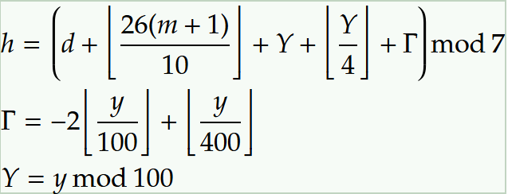

公式(ほんとに見るのか？？？)

Y = 年 (year)
M = 月 (month)
D = 日 (day)
M=1,2のときは"前年の"M=13,14にする
h=0のとき(土)、h=6のとき(金)
⌊26(m+1)/10⌋%7一覧
m=1 :1
m=2 :4
m=3 :3
m=4 :6
m=5 :1
m=6 :4
m=7 :6
m=8 :2
m=9 :5
m=10:0
m=11:3
m=12:5
ツェラーになろう
本編スタート
月項クイズ
経過時間:
0.00
秒
問目
土
日
月
火
水
木
金
リザルト
リザルトをツイート
もう一度
経過時間:
0.00
秒
問目
月項クイズ リザルト
もう一度